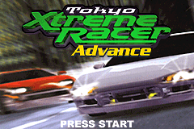

Tokyo Xtreme Racer Advance (USA)
EEPROM 4K
Cartridge Identity
- Game Code
BTZE(FamilyBTZ)- Header Title
TXRA- Maker / Revision
4Z/ rev0- ROM Size
- 4.0 MiB (4,194,304 B)
- Save Media
EEPROM 4K- SHA-256
fd9542217ea2f00c7d40062b4969e0d66fd54fa87518f8384e9e30497eb42c38- Engine / SDK Group
comm-026(8 families)
Screenshots

ROM Assets, Compression & Audio
- BIOS Compression
- LZ77 (
0x10): 0 streams · RLE (0x30): 0 streams - ROM Pointer Tables
- 10 tables (0 pointing to validated compressed streams)
- SDK Backup Tags
EEPROM_V124
Hardware MMIO Subsystems
dma_transfer0x8018e84ppu_display0x800d51c,0x800f008,0x80130bc,0x80161e8
Regional Variants & Revisions (Family BTZ)
- Tokyo Xtreme Racer Advance (Europe) (En,Fr,De,Es,It) (
BTZP, 4 MiB)